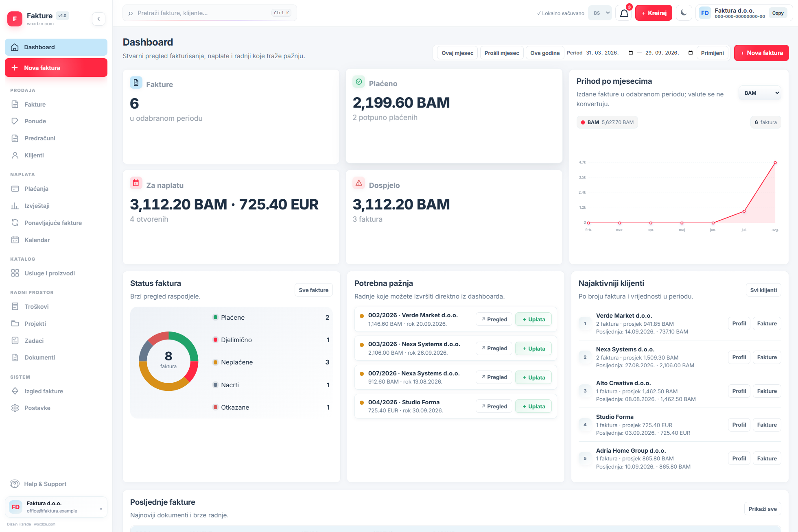

Počnite odmah
Otvorite aplikaciju i kreirajte dokument. Nema registracije, potvrde emaila ni početnog paketa postavki.
Kreirajte fakture, ponude i predračune, pratite naplatu i organizujte klijente iz jednog preglednog radnog prostora.

Od prvog dokumenta do evidentirane uplate — bez složenog podešavanja i skrivenih koraka.
Otvorite aplikaciju i kreirajte dokument. Nema registracije, potvrde emaila ni početnog paketa postavki.
Prilagodite boju i izgled A4 dokumenta, podatke firme, numeraciju, valutu, PDV i način plaćanja.
Aplikacija čuva podatke lokalno u browseru. Sigurnosnu kopiju možete izvesti i kasnije ponovo uvesti.
Funkcionalnosti su povezane tako da iste klijente, stavke i podatke koristite kroz cijeli tok rada.
Kreirajte i uređujte poslovne dokumente uz live A4 preview. Sačuvajte ih, odštampajte ili preuzmite kao PDF.
Kreiraj dokument →Sačuvajte kontakt i poreske podatke klijenata te proizvode i usluge za brži unos na budućim dokumentima.
Evidentirajte uplate i pratite neplaćene, djelimično plaćene, plaćene i dospjele fakture.
Pregledajte fakturisanje, naplatu, dospjela potraživanja i aktivnost klijenata kroz odabrani period.
Organizujte ponavljajuće fakture i pratite važne datume kroz ugrađeni kalendar.
Vodite troškove, projekte, zadatke i priloge na istom mjestu gdje upravljate prodajnim dokumentima.
Dodajte podatke firme i klijenta ili odaberite već sačuvanog klijenta.
Unesite stavke, količine, cijene, popuste i PDV dok se A4 pregled odmah ažurira.
Sačuvajte dokument u aplikaciji, preuzmite PDF ili pripremite verziju za štampu.
Fakture koristi lokalnu pohranu browsera. Za korištenje nije potreban korisnički račun niti slanje poslovnih podataka na aplikacijski server.
Nema sitnih slova za početak rada — otvorite aplikaciju i krenite.
Pogledaj pomoć u aplikaciji →Da. Fakture možete otvoriti i koristiti besplatno, bez pretplate i bez kreiranja korisničkog računa.
Ne. Aplikacija se otvara direktno u browseru i odmah je spremna za rad.
Podaci se čuvaju lokalno u pohrani vašeg browsera. Zbog toga preporučujemo redovan izvoz sigurnosne kopije, posebno prije promjene uređaja ili brisanja browser podataka.
Da. Dokument možete pregledati u A4 formatu, preuzeti kao PDF ili pripremiti za štampu.
Aplikacija podržava ponude, predračune, klijente, plaćanja, izvještaje, katalog usluga i proizvoda, ponavljajuće fakture, kalendar, troškove, projekte, zadatke i dokumente.
Landing stranica je potpuno responsive, dok je sama poslovna aplikacija trenutno optimizovana za rad na desktop i laptop računarima.
Besplatno, bez registracije i bez čekanja.